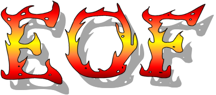
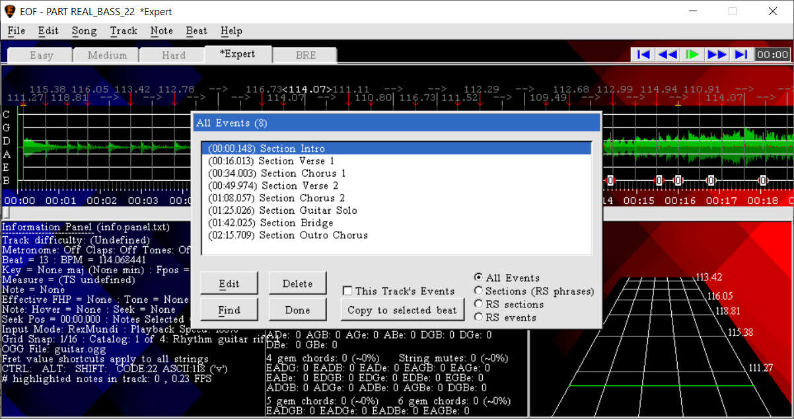
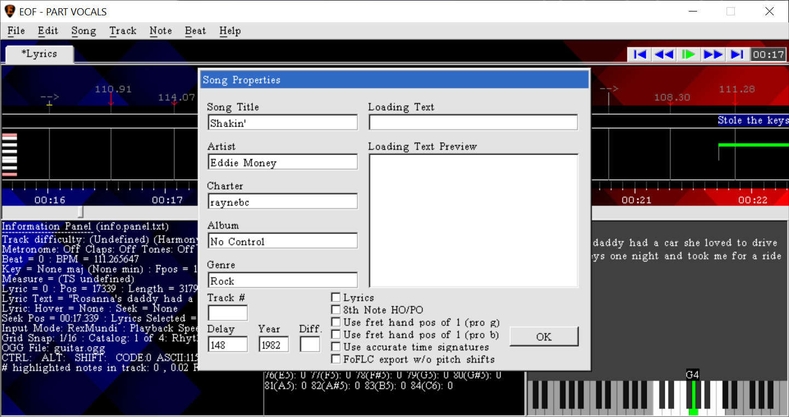
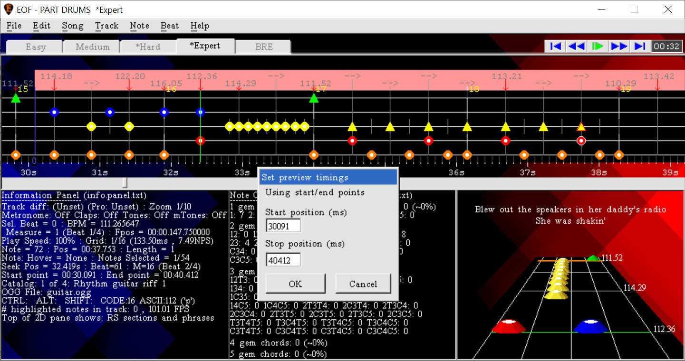
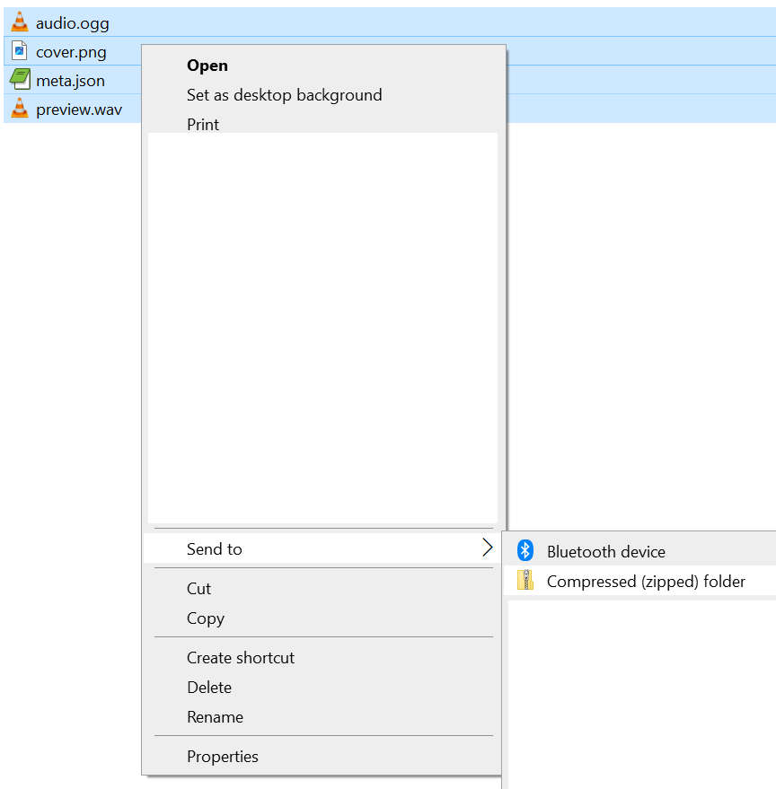
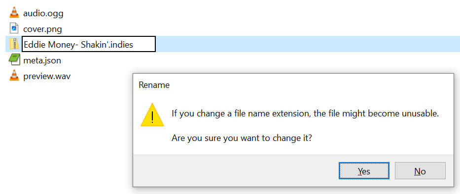
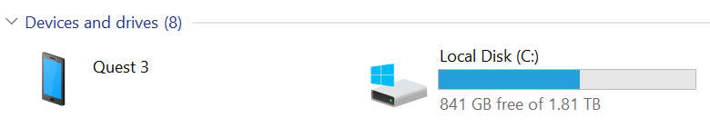
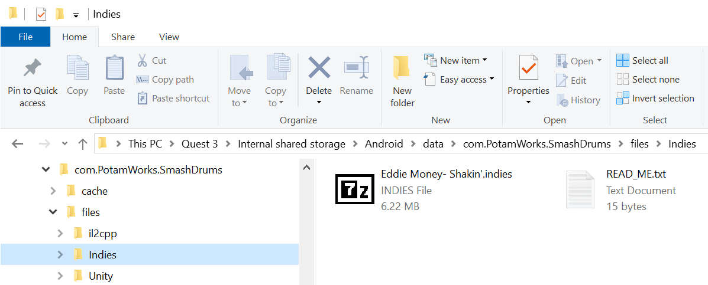
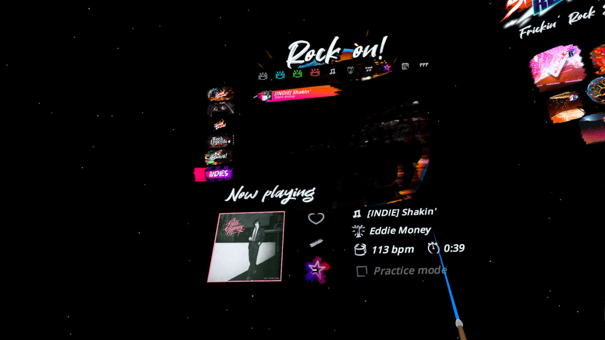

A song editor for "Frets On Fire"
Before you export the track to play in Smash Drums, you will want to review the following optional and mandatory steps:
DEFINING SECTIONS (Optional)
Smash Drums defines the parts of the song as different "phases", which are analogous to sections of a song, which can be any of the following:
intro
verse
prechorus
CHORUS
bridge
solo
outro
And each phase instances has its own "power" which is essentially how intense that part of the song is, as a number between 0.0 (not intense at all) and 1.0 (maximum intensity). For this optional yet HIGHLY RECOMMENDED feature to work, the chart will need to have sections, which are defined in EOF as “text events”. If you imported chart content from an existing file before getting to this step, the project may already have events defined. To see all of the events in the project, use “Beat>Events>All Events” and EOF will display a list:

From this list, you can easily edit, delete or seek to any of the events in the project. The events that will export to Smash Drums format as sections are those containing any of the words in the list above ("intro", "verse", "prechorus", "pre chorus", "pre-chorus", "chorus", "bridge", "solo", "outro"). Letter case does not matter. If a text event is defined having multiple section names from the list, such as the "section outro chorus" example in the above picture, the list shows the order of priority that is used and it will export as "chorus" instead of "outro". If there are no sections defined yet, or you want to add more, close the “All Events” dialog, seek to where you want the section to begin, click on the beat where the event will be placed and use either the “Beat>Events>Place Section” function and give a name of your choice (the letter case of the section name is up to you, it doesn’t need any particular capitalization). Regardless of how you define sections, the game expects one will be defined beginning with the very first beat in the project. If no sections are defined, EOF will automatically export with an intro section at the first beat. Remember to save your project in EOF.
Note: EOF does not yet support the ability to define the power/intensity of each phase, so that would require editing the JSON manually outside of EOF. Just make sure to follow #.# format for the number (0, 1 and .5 will not work).
ADDING METADATA (Mandatory)
The bare minimum of metadata for the chart is the song title and artist name (which were prompted for if you created a new project from scratch) and charter (the name you as the chart creator will be credited with). Or in case you imported a chart, this information is always expected to be defined and should be present after the import, but you can use “Song>Properties” to see various pieces of information for the chart.

You can ignore the other fields in Song Properties because they are not relevant to Smash Drums. This metadata is saved in the meta.json file during export, and if necessary you can make corrections by opening it in a text editor. Just remember that if you don’t add the corrections to your project in EOF, EOF will write the meta.json file again without the corrections the next time you have it export the project to Smash Drums format. Remember to save your project in EOF.
ADDING ALBUM ART (Optional)
Smash Drums can display album art for the chart in the song list. The documentation indicates it should be in PNG format, but JPEG format might also work. During export, EOF will check the project folder to see if any file with a .png" extension with a base name of "cover", "album", "label" or "image" (file names that were commonly used for album art with other rhythm games) is present. If so, EOF will copy the file to the export folder renamed with the base name of "cover" so it will display in the song list in Smash Drums. If the album art is in a different image format, but you have linked FFMPEG as described near the beginning of this tutorial, EOF will convert the image format to PNG for you.
ADDING PREVIEW AUDIO (Optional)
In the song selection menu, a custom chart can have a pre-defined portion of audio that will play while the song is selected. To define which part of the song to use as the preview audio, my preferred method is to seek to where the preview should start, use the "Edit>Set start point" function (ALT+Home), seek to where the preview should stop, use the "Edit>Set end point" function (ALT+End) and EOF will draw a red rectangle at the top of the piano roll to show this portion of the chart. Use seek and playback controls to evaluate if this seems like a good portion of the song to use, and if so, use the "File>Export>Preview audio" function. A "Set preview timings" dialog will appear and show the currently defined timestamps for the preview audio and where the timestamps are being decided (ie. the start/end points reflecting the red highlighted portion of the chart). Click OK and answer yes when EOF offers to generate preview audio files. Select a bitrate for the OGG file being created (this is going to be a short file, so setting 320kbps is fine) and click OK.

A command window should appear very briefly and disappear as soon as the preview.ogg audio file is created in the project folder. This function will have defined the preview audio timings into the project, and these timings are used in the event that the "File>Export>Preview audio" function is used again. If you were to decide to export a different part of the chart for preview audio, you must go into "Song>INI Settings" and delete the "preview_start_time" and "preview_end_time" entries in this list so that the preview audio export function can use the updated start and end point times.
EXPORTING THE DRUM TRACK
Once you have defined notes in at least one difficulty of the active drum track, you can export them to Smash Drums format by using the "File>Export>Smash Drums" function. Since the game requires the Expert difficulty to always be defined, if you only authored difficulties lower than expert, they will be promoted during Smash Drums export so that the highest populated difficulty will export as expert. When the export completes, there will be a "Smash Drums" subfolder in the project folder containing all of the applicable chart contents:
cover.png (album art, if it is present in the project folder)
audio.ogg (the chart audio)
preview.wav (the short preview audio of the song played in the song selection menu, if preview.ogg is present in the project folder)
meta.json (the metadata and drum notes defined for the chart
The game requires that these files be compressed into a zip file and renamed to change the file extension from .zip to .indies. However by default, Windows hides file extensions from you, so to do make it always show the file extension. The exact steps for this very from version to version of Windows, but should be something along the lines of opening the View menu in File Explorer, and in the Show/Hide menu, check the box that is labeled "File name extensions". Then, select the files EOF wrote to the "Smash Drums" subfolder of the project folder, right click and select the "Send to>Compressed (zipped) folder" option:

Windows will create a zip file and then allow you to rename it. You will need to delete the ENTIRE existing name including the .zip portion of the name at the end, and give it a name of your choosing, such as "Artist - Song.indies". It must end with .indies in order for the game to accept it. You should see Windows warn about the file type being changed, go ahead and click yes to confirm it is being changed from a ".zip" file extension to ".indies":

You should then see Windows change the file's icon from the zipped folder graphic, probably to a blank page icon, which is fine.
COPYING THE INDIES FILE ONTO YOUR HEADSET
The final step before you can play the exported chart in Smash Drums is to copy the .indies file from the previous step onto the headset’s storage. The headset will need to be plugged into your computer so that you can access the file system, browse to the correct Smash Drums game folder and copy the chart there. I’m not familiar with how to do this except for with a Windows computer, so assuming Windows, you will first need to install the Meta Quest Link application on the computer and do all related setup steps for linking the headset:
https://www.meta.com/help/quest/509273027107091/
When you plug the headset into the computer, wait for the prompt seen in the headset asking whether to allow the computer to access the files on the headset. Allow it:
https://www.meta.com/help/quest/310926493766802/
If the headset doesn't offer to allow the computer to access the headset's file system, I have usually found that it's because the Quest Link application indicates an update is required. Allow the program to update. In my experience, this update can take several minutes, so give it time. If nothing else works, try rebooting your computer and rebooting the headset.
After you allow the file system access (has to be allowed each time you plug the headset into the computer and want to transfer files to/from the headset), you can take the headset off and perform the rest of the steps from the computer. Open File Explorer, browse to the “This PC” item and you should see a Quest device listed with your drive letters:

Double click on the Quest device, and browse folder by folder to get to this path:
This PC\Quest 3\Internal shared storage\Android\data\com.PotamWorks.SmashDrums\files\Indies
If you get to the "files" folder and there is no subfolder named "Indies" yet, create a folder with that exact name and then browse into it. Open a second File Explorer (ie. SHIFT+click on the File Explorer icon on the taskbar) so you can keep the first File Explorer at to the Smash Drums Indies folder. In the second File Explorer instance, browse to the .indies file you created, select it, copy it to Windows’s clipboard and then go back to the first File Explorer instance and paste it into the Indies folder on the headset:

Once the paste operation is done, there is no way to demand Windows to eject the storage like you would with a flash drive, so you will just have to unplug it from your computer. Then when you launch the game, if everything worked well your charts will appear in the song list when you look through the INDIES song list:

Play the song and if you see any problems, bring them to the attention of EOF’s or Smash Drums’s developers by posting in the "indies-discussion" channel of the Smash Drums Discord server. Please remember that the Indies feature is still new so it is fair to expect that there are bugs to work out. Be kind and patient. If you are willing, it is also helpful for you to perform any troubleshooting you can, such as determining whether a problem only happens in specific scenarios (ie. the game crashes, but only if a specific feature like lyric display is enabled). Most importantly, have fun!